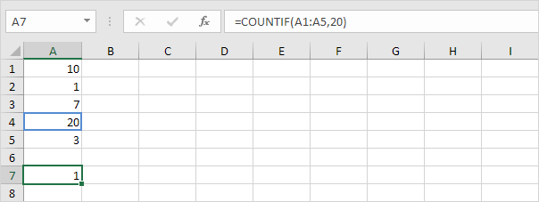
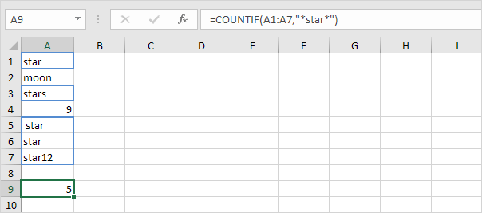
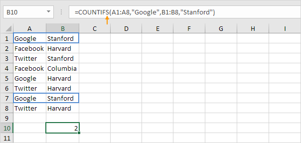
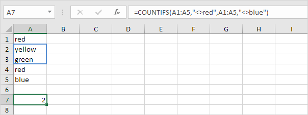
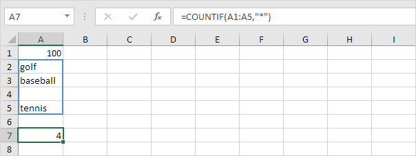
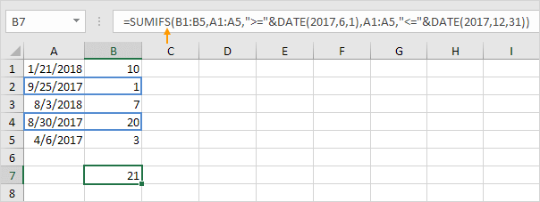
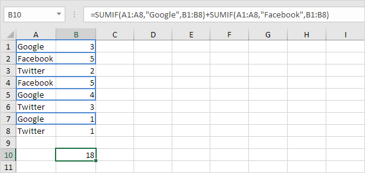
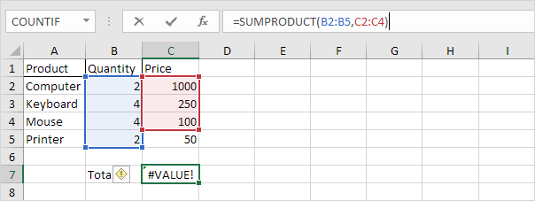
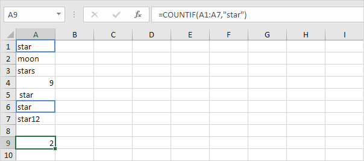

Fungsi COUNTIF yang kuat di Excel menghitung sel berdasarkan satu kriteria. Halaman ini berisi banyak contoh COUNTIF yang mudah diikuti.
 unduh file countif dan coba masukkan fungsi-fungsi ini.
unduh file countif dan coba masukkan fungsi-fungsi ini.
Kriteria Numerik
Gunakan fungsi COUNTIF di Excel untuk menghitung sel yang sama dengan nilai, menghitung sel yang lebih besar atau sama dengan nilai, dll.
1. Fungsi COUNTIF di bawah ini menghitung jumlah sel yang sama dengan 20.

2. Fungsi COUNTIF berikut memberikan hasil yang sama persis.

3. Fungsi COUNTIF di bawah ini menghitung jumlah sel yang lebih besar atau sama dengan 10.

4. Fungsi COUNTIF berikut memberikan hasil yang sama persis.

Penjelasan: operator & menggabungkan simbol greater than or equal to dan nilai di sel C1.
5. Fungsi COUNTIF di bawah ini menghitung jumlah sel yang tidak sama dengan 7.

6. Fungsi COUNTIF di bawah ini menghitung jumlah sel yang sama dengan 3 atau 7.

Trik Teks
Gunakan fungsi COUNTIF di Excel dan beberapa trik untuk menghitung sel yang berisi teks tertentu. Selalu sertakan teks dalam tanda kutip ganda.
1. Fungsi COUNTIF di bawah ini menghitung jumlah sel yang berisi persis bintang.

2. Fungsi COUNTIF di bawah ini menghitung jumlah sel yang berisi persis bintang + 1 karakter. Tanda tanya (?) cocok dengan tepat satu karakter.

3. Fungsi COUNTIF di bawah ini menghitung jumlah sel yang berisi persis bintang + serangkaian karakter nol atau lebih. Tanda bintang (*) cocok dengan serangkaian karakter nol atau lebih.

4. Fungsi COUNTIF di bawah ini menghitung jumlah sel yang mengandung bintang dengan cara apa pun.

5. Fungsi COUNTIF di bawah ini menghitung jumlah sel yang berisi teks.

Hitung Boolean
Gunakan fungsi COUNTIF di Excel untuk menghitung nilai Boolean (TRUE atau FALSE).
1. Fungsi COUNTIF di bawah ini menghitung jumlah sel yang berisi Boolean TRUE.

2. Fungsi COUNTIF di bawah ini menghitung jumlah sel yang berisi Boolean FALSE.

Hitung Kesalahan (Count Errors)
Gunakan fungsi COUNTIF di Excel untuk menghitung kesalahan tertentu.
1. Fungsi COUNTIF di bawah ini menghitung jumlah sel yang berisi #NAME? kesalahan.

2. Rumus array di bawah ini menghitung jumlah total kesalahan dalam Range sel.

Catatan: selesaikan rumus array dengan menekan Ctrl+Shift+Enter. Excel menambahkan kurung kurawal {}. Kunjungi halaman kami tentang Menghitung Kesalahan untuk petunjuk terperinci tentang cara membuat rumus array ini.
And (Dan) Kriteria
Menghitung dengan kriteria Dan di Excel itu mudah. Fungsi COUNTIFS (dengan huruf S di akhir) di Excel menghitung sel berdasarkan dua atau lebih kriteria.
1. Misalnya, untuk menghitung jumlah baris yang berisi Google dan Stanford, cukup gunakan fungsi COUNTIFS.

Or (Atau) Kriteria
Menghitung dengan kriteria Or di Excel bisa jadi rumit.
1. Fungsi COUNTIF di bawah ini menghitung jumlah sel yang berisi Google atau Facebook (satu kolom). Tidak ada ilmu roket sejauh ini.

2. Namun, jika Anda ingin menghitung jumlah baris yang berisi Google atau Stanford (dua kolom), Anda tidak bisa begitu saja menggunakan fungsi COUNTIF dua kali (lihat gambar di bawah).

Catatan: baris yang berisi Google dan Stanford dihitung dua kali, tetapi seharusnya hanya dihitung sekali. 4 adalah jawaban yang kita cari.
3. Rumus array di bawah ini berhasil.

Catatan: selesaikan rumus array dengan menekan Ctrl+Shift+Enter. Excel menambahkan kurung kurawal {}. Kunjungi halaman kami tentang Menghitung dengan Atau Kriteria untuk instruksi terperinci tentang cara membuat rumus array ini.
Lebih lanjut tentang Countif
Fungsi COUNTIF adalah fungsi yang hebat. Mari kita lihat beberapa contoh keren lainnya.
1. Fungsi COUNTIF di bawah ini menggunakan Range bernama. Range bernama Ages mengacu pada Range A1:A6.

2. Fungsi COUNTIF di bawah ini menghitung jumlah sel yang kurang dari rata-rata usia (32,2).

3. Untuk menghitung sel di antara dua angka, gunakan fungsi COUNTIFS (dengan huruf S di akhir).

4. Gunakan fungsi COUNTIF untuk menghitung berapa kali setiap nilai muncul dalam Range bernama Ages.

Catatan: sel B2 berisi rumus =COUNTIF(Usia,A2), sel B3 =COUNTIF(Usia,A3), dll.
5. Tambahkan fungsi IF untuk menemukan duplikatnya.

Tips: gunakan COUNTIF dan pemformatan bersyarat untuk menemukan dan menyorot duplikat di Excel.
Hitung Magic (Count Magic)
Fungsi COUNTIF tidak dapat menghitung berapa kali kata tertentu muncul dalam sel atau Range sel. Yang kita butuhkan hanyalah sedikit Magic!
1. Rumus di bawah ini menghitung berapa kali kata "dog" muncul di sel A1.

2. Rumus di bawah ini menghitung berapa kali kata "dog" muncul dalam Range A1:A2.

Catatan: kunjungi halaman kami tentang menghitung kata untuk mempelajari lebih lanjut tentang rumus ini.
Contoh ini menunjukkan Anda bagaimana untuk menghitung kosong dan tidak kosong sel di Excel.
unduh file Hitung Sel Kosong-Tidak Kosong dan coba masukkan fungsi-fungsi ini.
1. Fungsi COUNTBLANK di bawah ini menghitung jumlah sel kosong dalam Range A1:A7.

2. Fungsi COUNTA di bawah ini menghitung jumlah sel yang tidak kosong dalam Range A1:A7. COUNTA adalah singkatan dari hitung semua.
3. Fungsi COUNTIFS di bawah ini menghitung jumlah sel kosong dalam Range B1:B7 dengan satu kriteria tambahan (biru).

Penjelasan : fungsi COUNTIFS (dengan huruf S di akhir) di Excel menghitung sel berdasarkan dua atau lebih kriteria. Gunakan string kosong (dua tanda kutip ganda tanpa apa pun di antaranya) untuk menemukan sel kosong.
4. Fungsi COUNTIFS di bawah ini menghitung jumlah sel tidak kosong dalam Range B1:B7 dengan satu kriteria tambahan (merah muda).

Pelajari cara menghitung jumlah karakter dalam sel atau Range sel dan cara menghitung berapa kali karakter tertentu muncul dalam sel atau Range sel.
unduh file hitung karakter dan coba masukkan fungsi-fungsi ini.
1. Fungsi LEN di Excel menghitung jumlah karakter dalam sel.
Penjelasan: fungsi LEN menghitung 2 angka, 1 spasi dan 6 huruf.
2. Gunakan SUM dan LEN untuk menghitung jumlah karakter dalam Range sel.

Catatan: seperti yang dapat Anda bayangkan, rumus ini bisa menjadi sangat panjang.
3. Rumus array di bawah ini menghitung jumlah karakter dalam Range sel.

Catatan: selesaikan rumus array dengan menekan Ctrl+Shift+Enter. Excel menambahkan kurung kurawal {}. Konstanta array {9;4;6;5} digunakan sebagai argumen untuk fungsi SUM, memberikan hasil 24. Mungkin ini satu langkah terlalu jauh untuk Anda pada tahap ini, tetapi ini menunjukkan kepada Anda salah satu dari banyak lainnya fitur canggih yang ditawarkan Excel.
4. Gunakan LEN dan SUBSTITUTE untuk menghitung berapa kali karakter tertentu (dalam contoh ini, karakter a) muncul dalam sel.
Penjelasan: fungsi SUBSTITUTE menggantikan karakter a (argumen kedua) dengan string kosong (argumen ketiga). LEN(SUBSTITUTE(A1,"a","")) sama dengan 8 (panjang string tanpa karakter a). Jika kita mengurangi angka ini dari 9 (jumlah total karakter di sel A1), kita mendapatkan jumlah kemunculan karakter a di sel A1.
5. Rumus array di bawah ini menghitung berapa kali karakter tertentu (dalam contoh ini, karakter a) muncul dalam Range sel.
Catatan: selesaikan rumus array dengan menekan Ctrl+Shift+Enter. Excel menambahkan kurung kurawal {}. Konstanta larik {1;1;2;1} digunakan sebagai argumen untuk fungsi SUM, memberikan hasil 5. Fungsi SUBSTITUTE peka huruf besar/kecil. A di Alaska tidak dihitung.
6. Rumus array di bawah ini menghitung kemunculan huruf kecil dan huruf besar dari karakter tertentu (dalam contoh ini, karakter a).

Penjelasan: Fungsi LOWER mengubah semua huruf menjadi huruf kecil terlebih dahulu.
Di Excel, <> berarti tidak sama dengan. Operator <> di Excel memeriksa apakah dua nilai tidak sama satu sama lain. Mari kita lihat beberapa contoh.
unduh file not equal to dan coba masukkan fungsi-fungsi ini.
1. Rumus di sel C1 di bawah mengembalikan TRUE karena nilai teks di sel A1 tidak sama dengan nilai teks di sel B1.

2. Rumus di sel C1 di bawah mengembalikan FALSE karena nilai di sel A1 sama dengan nilai di sel B1.
3. Fungsi IF di bawah ini menghitung kemajuan antara nilai awal dan akhir jika nilai akhir tidak sama dengan string kosong (dua tanda kutip ganda tanpa apa pun di antaranya), selain itu fungsi ini menampilkan string kosong (lihat baris 5).

Catatan: kunjungi halaman kami tentang fungsi IF untuk informasi selengkapnya tentang fungsi Excel ini.
4. Fungsi COUNTIF di bawah ini menghitung jumlah sel dalam Range A1:A5 yang tidak sama dengan "merah".
Catatan: kunjungi halaman kami tentang fungsi COUNTIF untuk informasi selengkapnya tentang fungsi Excel ini.
5. Fungsi COUNTIF di bawah ini menghasilkan hasil yang sama persis. Operator & menggabungkan operator 'tidak sama dengan' dan nilai teks di sel C1.
6. Fungsi COUNTIFS di bawah ini menghitung jumlah sel dalam Range A1:A5 yang tidak sama dengan "merah" dan tidak sama dengan "biru".

Penjelasan fungsi COUNTIFS di Excel menghitung sel berdasarkan dua kriteria atau lebih. Fungsi COUNTIFS ini memiliki 2 pasangan Range/kriteria.
7. Fungsi AVERAGEIF di bawah ini menghitung rata-rata nilai dalam Range A1:A5 yang tidak sama dengan 0.

Catatan: dengan kata lain, fungsi AVERAGEIF di atas menghitung rata-rata tidak termasuk nol.
Halaman ini menggambarkan beberapa cara untuk menghitung sel dengan teks di Excel. Kunjungi halaman kami tentang fungsi COUNTIF untuk menghitung sel yang berisi teks tertentu.
unduh file hitung sel dengan teks dan coba masukkan fungsi-fungsi ini.
1a. Gunakan fungsi COUNTIF dan simbol asterisk (*) untuk menghitung sel dengan teks.

1b. Anda juga dapat membuat rumus array untuk menghitung sel dengan teks.

Catatan: kunjungi halaman kami tentang rumus larik untuk mempelajari lebih lanjut tentang rumus array sel tunggal.
1c. Anda juga dapat menggunakan fungsi SUMPRODUCT untuk menghitung sel dengan teks.

Catatan: kunjungi halaman kami tentang fungsi SUMPRODUCT untuk mempelajari lebih lanjut tentang fungsi ini.
2a. Angka, Boolean (TRUE or FALSE), kosong, dan kesalahan tidak dihitung sebagai teks.

2b. Rumus di bawah ini menghitung sel dengan teks dan menghitung sel dengan Boolean.

3a. Masukkan spasi ke dalam sel A4. Fungsi COUNTIF pada langkah 1a dan langkah 2a juga menghitung sel dengan karakter spasi.

3b. Fungsi COUNTIFS di bawah ini menghitung sel dengan teks dan mengecualikan sel dengan karakter spasi.
Catatan: fungsi COUNTIFS di Excel menghitung sel berdasarkan dua kriteria atau lebih.
Gunakan fungsi SUM di Excel untuk menjumlahkan rentang sel, seluruh kolom, atau sel yang tidak bersebelahan. Untuk membuat rumus SUM yang mengagumkan , gabungkan fungsi SUM dengan fungsi Excel lainnya.
unduh file sum dan coba masukkan fungsi-fungsi ini.
Jumlah Rentang
Sebagian besar waktu, Anda akan menggunakan fungsi SUM di Excel untuk menjumlahkan rentang sel.

Jumlahkan Seluruh Kolom
Anda juga dapat menggunakan fungsi SUM di Excel untuk menjumlahkan seluruh kolom.


Catatan: Anda juga dapat menggunakan fungsi SUM di Excel untuk menjumlahkan seluruh baris. Misalnya, =SUM(5:5) menjumlahkan semua nilai di baris ke-5.
Jumlah Sel yang Tidak Bersebelahan
Anda juga dapat menggunakan fungsi SUM di Excel untuk menjumlahkan sel yang tidak bersebelahan. Tidak bersebelahan berarti tidak bersebelahan.

Catatan: =A3+A5+A8 menghasilkan hasil yang sama persis!
JumlahOtomatis
Gunakan JumlahOtomatis atau tekan Alt + = untuk menjumlahkan kolom atau baris angka dengan cepat.
1. Pertama, pilih sel di bawah kolom angka (atau di sebelah deretan angka) yang ingin Anda jumlahkan.

2. Pada tab Beranda, dalam grup Pengeditan, klik JumlahOtomatis (atau tekan Alt + =).

3. Tekan Enter.

Jumlahkan Setiap Baris Ke-N
Rumus SUM di bawah ini menggunakan SUM, MOD dan ROW untuk menjumlahkan setiap baris ke-n. Ubah 3 menjadi 4 untuk menjumlahkan setiap baris ke-4, menjadi 5 untuk menjumlahkan setiap baris ke-5, dst.

Catatan: bilah rumus menunjukkan bahwa ini adalah rumus larik dengan mengapitnya dalam kurung kurawal {}. Jangan mengetik ini sendiri. Untuk memasukkan rumus array, selesaikan dengan menekan Ctrl+Shift+Enter.
Jumlahkan Bilangan Terbesar
Rumus SUM di bawah ini menggunakan SUM dan LARGE untuk menjumlahkan angka terbesar dalam suatu rentang. Ubah {1,2,3,4} menjadi {1,2,3,4,5} untuk menjumlahkan 5 bilangan terbesar.

Catatan: =LARGE(A1:A11,2) cukup mengembalikan angka terbesar kedua.
Jumlah Rentang dengan Kesalahan
Rumus SUM di bawah ini menggunakan SUM dan IFERROR untuk menjumlahkan rentang dengan kesalahan. Anda juga dapat menggunakan fungsi AGGREGATE di Excel untuk menjumlahkan rentang dengan kesalahan.

Catatan: fungsi SUM di Excel secara otomatis mengabaikan nilai teks.
Contoh ini mengajarkan Anda cara membuat total berjalan (jumlah kumulatif) di Excel. Total yang berjalan berubah setiap kali data baru ditambahkan ke daftar.
unduh file total berjalan dan coba masukkan fungsi-fungsi ini.
1. Pilih sel B9 dan masukkan fungsi SUM sederhana.
2. Pilih sel C2 dan masukkan fungsi SUM yang ditunjukkan di bawah ini.
Penjelasan: sel pertama (B$2) dalam referensi rentang adalah referensi campuran. Kami memperbaiki referensi ke baris 2 dengan menambahkan simbol $ di depan nomor baris. Sel kedua (B2) dalam referensi rentang adalah referensi relatif normal.
3. Pilih sel C2, klik di sudut kanan bawah sel C2 dan seret ke bawah ke sel C7.
Penjelasan: ketika kita menyeret rumus ke bawah, referensi campuran (B$2) tetap sama, sedangkan referensi relatif (B2) berubah menjadi B3, B4, B5, dll.
4. Misalnya, lihat rumus di sel C3.
5. Misalnya, lihat rumus di sel C4.
6. Pada langkah 2, masukkan fungsi IF yang ditunjukkan di bawah ini (dan seret ke bawah ke sel C7) untuk hanya menampilkan jumlah kumulatif jika data telah dimasukkan.
Penjelasan: jika sel B2 tidak kosong (<> berarti tidak sama dengan), fungsi IF di sel C2 menampilkan jumlah kumulatif, selain itu menampilkan string kosong.
7. Masukkan penjualan di bulan April.
Fungsi SUMIF yang kuat di Excel menjumlahkan sel berdasarkan satu kriteria. Halaman ini berisi banyak contoh SUMIF yang mudah diikuti.
unduh file sumif dan coba masukkan fungsi-fungsi ini.
Kriteria Numerik
Gunakan fungsi SUMIF di Excel untuk menjumlahkan sel berdasarkan angka yang memenuhi kriteria tertentu.
1. Fungsi SUMIF di bawah (dua argumen) menjumlahkan nilai dalam rentang A1:A5 yang kurang dari atau sama dengan 10.

2. Fungsi SUMIF berikut memberikan hasil yang sama persis. Operator & menggabungkan simbol 'kurang dari atau sama dengan' dan nilai dalam sel C1.

3. Fungsi SUMIF di bawah ini (tiga argumen, argumen terakhir adalah rentang yang akan dijumlahkan) menjumlahkan nilai dalam rentang B1:B5 jika sel terkait dalam rentang A1:A5 berisi nilai 25.

4. Fungsi SUMIF berikut memberikan hasil yang sama persis (argumen kedua mengacu pada sel D1).

Kriteria Teks
Gunakan fungsi SUMIF di Excel untuk menjumlahkan sel berdasarkan string teks yang memenuhi kriteria tertentu. Selalu sertakan teks dalam tanda kutip ganda.
1. Fungsi SUMIF di bawah ini menjumlahkan nilai dalam rentang B1:B5 jika sel yang sesuai dalam rentang A1:A5 berisi lingkaran persis.

2. Fungsi SUMIF di bawah ini menjumlahkan nilai dalam rentang B1:B5 jika sel terkait dalam rentang A1:A5 tidak berisi segitiga sama persis.

3. Fungsi SUMIF di bawah ini menjumlahkan nilai dalam rentang B1:B5 jika sel yang sesuai dalam rentang A1:A5 berisi persis lingkaran + 1 karakter. Tanda tanya (?) cocok dengan tepat satu karakter.

4. Fungsi SUMIF di bawah ini menjumlahkan nilai dalam rentang B1:B5 jika sel terkait dalam rentang A1:A5 berisi rangkaian nol atau lebih karakter + file. Tanda bintang (*) cocok dengan serangkaian karakter nol atau lebih.

5. Fungsi SUMIF di bawah jumlah nilai dalam rentang B1:B5 jika sel yang sesuai dalam rentang A1:A5 berisi segitiga atau lingkaran yang tepat8.

Kriteria Tanggal
Gunakan fungsi SUMIF di Excel untuk menjumlahkan sel berdasarkan tanggal yang memenuhi kriteria tertentu.
1. Fungsi SUMIF di bawah ini menjumlahkan penjualan setelah 20 Januari 2018.

Catatan: fungsi DATE di Excel menerima tiga argumen: tahun, bulan, dan hari.
2. Fungsi SUMIF di bawah ini menjumlahkan penjualan hari ini.

Catatan: hari ini adalah 3 Agustus 2018.
3. Fungsi SUMIFS (dengan huruf S di akhir) di bawah ini menjumlahkan penjualan antara dua tanggal.

Catatan: fungsi SUMIFS di Excel menjumlahkan sel berdasarkan dua atau lebih kriteria (argumen pertama adalah rentang yang akan dijumlahkan, diikuti oleh dua atau lebih pasangan rentang/kriteria). Sesuaikan tanggal untuk menjumlahkan penjualan pada bulan, tahun, dll.
Dan Kriteria
Menjumlahkan dengan kriteria Dan di Excel itu mudah.
1. Misalnya, untuk menjumlahkan sel yang memenuhi kriteria berikut: Google dan Stanford (dua rentang kriteria), cukup gunakan fungsi SUMIFS (dengan huruf S di akhir).

Catatan: ingat, saat menggunakan fungsi SUMIFS, argumen pertama adalah rentang yang akan dijumlahkan, diikuti oleh dua atau lebih pasangan rentang/kriteria.
Atau Kriteria
Menjumlahkan dengan kriteria Or di Excel bisa jadi rumit.
1. Rumus di bawah ini menjumlahkan sel yang memenuhi kriteria berikut: Google atau Facebook (satu rentang kriteria). Tidak ada ilmu roket sejauh ini.

2. Namun, jika Anda ingin menjumlahkan sel yang memenuhi kriteria berikut: Google atau Stanford (dua rentang kriteria), Anda tidak bisa begitu saja menggunakan fungsi SUMIF dua kali (lihat gambar di bawah).

Catatan: sel yang memenuhi kriteria Google dan Stanford ditambahkan dua kali, tetapi hanya boleh ditambahkan satu kali. 10 adalah jawaban yang kita cari.
3. Rumus array di bawah ini berhasil.

Catatan: selesaikan rumus array dengan menekan Ctrl+Shift+Enter. Excel menambahkan kurung kurawal {}. Kunjungi halaman kami tentang Menjumlahkan dengan Atau Kriteria untuk instruksi terperinci tentang cara membuat rumus array ini.
Untuk menghitung jumlah produk dari angka yang sesuai dalam satu atau beberapa rentang, gunakan fungsi SUMPRODUCT Excel yang kuat.
unduh file sumproduct dan coba masukkan fungsi-fungsi ini.
Penggunaan Dasar
1. Misalnya, fungsi SUMPRODUCT di bawah ini menghitung jumlah total yang dibelanjakan.

Penjelasan: fungsi SUMPRODUCT melakukan perhitungan ini: (2 * 1000) + (4 * 250) + (4 * 100) + (2 * 50) = 3500.
2. Rentang harus memiliki dimensi yang sama atau Excel akan menampilkan #VALUE! kesalahan.

3. Fungsi SUMPRODUCT memperlakukan setiap entri yang bukan numerik seolah-olah mereka adalah nol.
4. Jika Anda menyediakan rentang tunggal, fungsi SUMPRODUCT menghasilkan hasil yang sama persis dengan fungsi SUM.

Penggunaan Lanjutan
Fungsi SUMPRODUCT adalah fungsi yang sangat serbaguna dan dapat menghasilkan hasil yang sama seperti banyak fungsi bawaan di Excel dan bahkan rumus array!
1a. Misalnya, fungsi COUNTIF di bawah ini menghitung jumlah sel yang berisi bintang persis.

1b. Fungsi SUMPRODUCT di bawah ini menghasilkan hasil yang sama persis.

Penjelasan:
--(A1:A7="star") direduksi menjadi konstanta array berikut:
--{TRUE;FALSE;FALSE;FALSE;FALSE;TRUE;FALSE}
Negatif ganda -- memaksa Boolean ini menjadi 1 dan 0 (TRUE=1, FALSE=0). Hasil:
{1;0;0;0;0;1;0}
Konstanta array ini digunakan sebagai argumen untuk fungsi SUMPRODUCT, memberikan hasil 2.
1c. Fungsi COUNTIF di bawah ini menghitung jumlah sel yang berisi persis bintang + 1 karakter. Tanda tanya (?) cocok dengan tepat satu karakter.

1d. Fungsi SUMPRODUCT tidak sempurna! Anda tidak dapat menggunakan karakter wildcard (? dan *) saat Anda menggunakan fungsi SUMPRODUCT.

2a. Rumus array di bawah ini menghitung jumlah karakter dalam rentang sel.

Catatan: selesaikan rumus array dengan menekan Ctrl+Shift+Enter. Excel menambahkan kurung kurawal {}.
2b. Fungsi SUMPRODUCT di bawah ini menghasilkan hasil yang sama persis.

Catatan: konstanta array {9;4;6;5} digunakan sebagai argumen untuk fungsi SUMPRODUCT, memberikan hasil 24. Fungsi SUMPRODUCT menangani array secara native sehingga Anda tidak perlu menyelesaikannya dengan menekan Ctrl+Shift+Enter. Ini adalah salah satu keuntungan terbesar dari fungsi SUMPRODUCT karena kurung kurawal {} membingungkan banyak pemula Excel!
3a. Rumus array di bawah ini menjumlahkan penjualan pada tahun 2018.

3b. Fungsi SUMPRODUCT di bawah ini menghasilkan hasil yang sama persis.

Penjelasan:
(TAHUN(A1:A5)=2018)*B1:B5 dikurangi menjadi:
({2018;2017;2018;2017;2017}=2018)*{10;1;7;20;3} dan ini dikurangi menjadi:
{TRUE;FALSE;TRUE;FALSE;FALSE}*{10;1;7;20;3}
Kita tidak memerlukan
negatif ganda (lihat contoh 1b) karena operator perkalian * secara otomatis memaksa Boolean menjadi 1 dan 0 (TRUE=1, FALSE=0). Hasil:
{10;0;7;0;0}
Konstanta array ini digunakan sebagai argumen untuk fungsi SUMPRODUCT,
memberikan hasil 17.